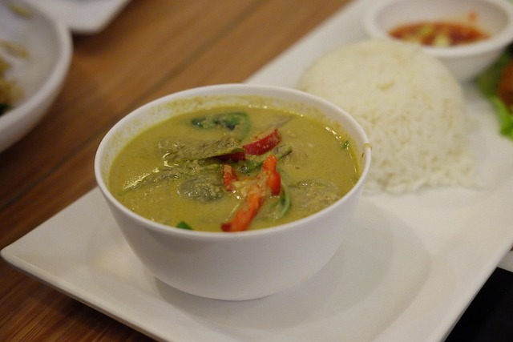

Green Curry

Image by ปภาวาริน เกตุวิไล from Pixabay
I use it as a stock
Description
Green curry is a classic dish within the asian cuisine.
It's widespread and can be found in many south-east asian Nations,
with every culture adding their own spin on the recipe.
Here I'll show you my stolen european version.
Ingredients
- Spices
- Cumin 1 tablespoon
- All spice 1 tablespoon
- White pepper 1 tablespoon
- Powdered chilli 1 tablespoon
- Coriander 1 tablespoon
- Nutmeg 1 tablespoon
- Powdered Curry Mix 1 tablespoon
- Nutmeg 1/2 tablespoon
- Green Curry Paste 1-2 big tablespoons
- MSG/Oister-shroom sauce to liking
- Other
- Green Onions 1-2
- Peanuts (unsalted, roasted)
- Green Chillis 2
- Red Onion 1
- Garlic 6Gloves
- Ginger small handfull
- Vegetable broth 1cup
- Broccoli
- Spinach
- Chickpeas
- Chicken (I use a vegan substitute)
- Coconut Milk 2 Cans
Steps
- Add oil to a pan.
- Cut onions, garlic and chilli. Shred the ginger.
- On low heat first add chillis and onions.
- After a couple of minutes add the spices and ginger.
- After a couple of minutes add the Garlic.
- Shortly after add 1/4 can of coconut milk so the garlic doesn't burn
- Add the curry paste and mix good.
Keep adding small amounts of coconut milk so your spices don't burn.
- Boil/Steam the broccoli and add it to the pan once it's done.
- Add the chicken
(if real chicken you want to have it on high heat for a short time
then finish cooking the chicken in the coconut milk.)
- Add the rest of the coconut milk and the chickpeas.
- Slowly add spinach and add broth for liquid as you need it.
- Finish with cream and msg/oister-shroom sauce.
- Add green onions and peanuts as topping.
Home